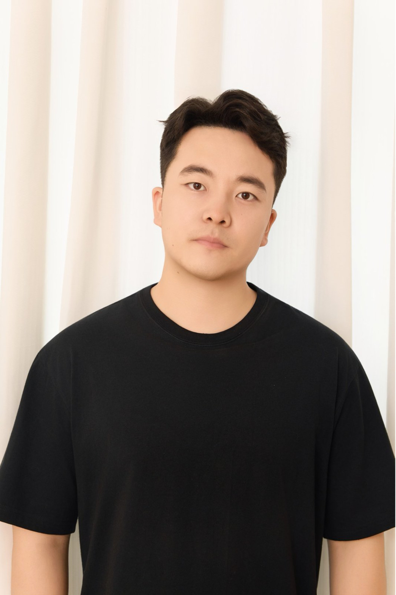
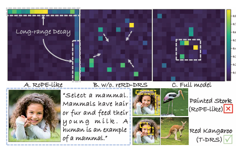
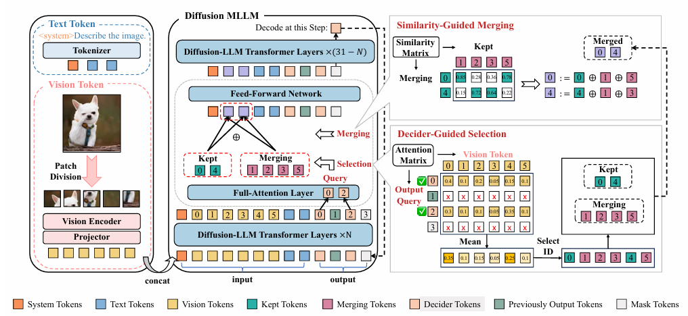
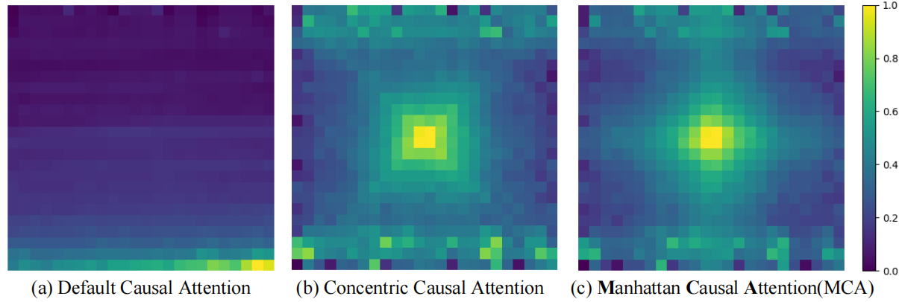
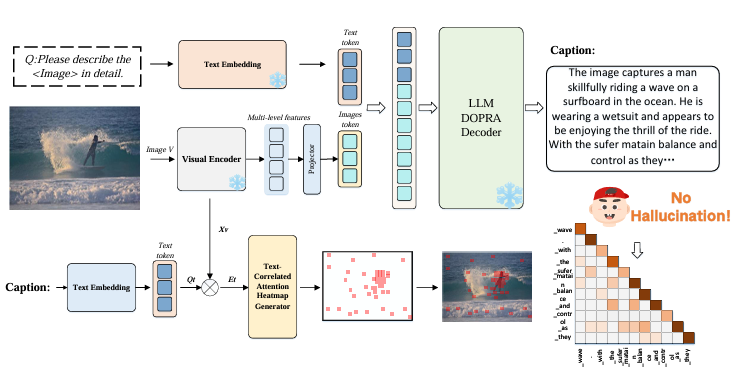

Xiaofeng ZhangPh.D. Student, Shanghai Jiao Tong University
Key Laboratory of System Control and Information Processing
[Google Scholar]
[GitHub]
|
 |
📰 News
- 2/2026: We have one paper (SOPE, 3D-LLM-ROPE) accepted by CVPR 2026, congratulations to Guanting Ye!
- 2/2026: LVLMs-Saliency has been chosen as ICLR 2026 Oral!
- 1/2026: Three papers accepted by ICLR 2026, congratulations!
- 11/2025: Two papers accepted by AAAI 2026, congratulations to Shuochen Chang and Peng Gao.
- 9/2025: One paper accepted by IPM (中科院一区 Top).
- 9/2025: One paper (Spatial-R1) accepted by NeurIPS 2025, congratulations to Yifan Shen and Yuanzhe Liu.
- 8/2025: One paper (EAH) accepted by EMNLP 2025 Oral 🏆, see you in Suzhou.
- 7/2025: One paper (MCA-LLaVA) accepted by ACM MM 2025, congratulations to Qiyan Zhao.
- 6/2025: One paper (pCR Prediction in Breast Cancer) accepted by MICCAI 2025, congratulations to Dingrui Ma.
- 6/2025: One paper (AdaToken-3D, VLM token pruning) accepted by IROS 2025, congratulations to Kai Zhang.
- 6/2025: One paper (Mural inpainting) accepted by ACM TOMM, congratulations to Zishan Xu.
- 5/2025: One paper (Image segmentation) accepted by ICML 2025, congratulations to Jiawei Cao.
- 4/2025: One paper (Image restoration) accepted by IJCAI 2025, congratulations to Jiesong Bai.
- 1/2025: One paper (LLaVA-CAM) accepted by NAACL 2025 Oral 🏆.
- 1/2025: One paper accepted by ICLR 2025, congratulations to Sinan Fan.
- 1/2025: One paper (Wakeup-Darkness) accepted by ACM TOMM.
- 12/2024: One paper (SimIgnore) accepted by Neural Networks.
- 12/2024: One paper accepted by IEEE TIM, congratulations to Jietao Yang.
- 12/2024: One paper accepted by AAAI 2025.
- 10/2024: One paper accepted by WACV 2025, congratulations to Yingtie Lei.
- 9/2024: One paper accepted by NeurIPS 2024, congratulations to Xiaosong Yuan.
- 8/2024: One paper (DOPRA) accepted by ACM MM 2024.
👤 About Me
I am currently a third-year Ph.D. student at Shanghai Jiao Tong University. Prior to that, I received my Master's degree from Nanjing University of Posts and Telecommunications. My current research focuses on large vision-language models, including hallucination mitigation, position encoding optimization, and efficient multimodal reasoning.
📚 Biography
- 2022.09 – Present: Ph.D. student at Shanghai Jiao Tong University, supervised by Prof. Chaochen Gu and Prof. Hao Tang.
- 2024.01 – 2025.07: Research Intern at Alibaba Cloud (飞天实验室), supervised by Dr. Chen Shen.
- 2021.09 – 2022.09: Product Manager at China Mobile Communications Group Jiangsu Co., Ltd. (Wuxi Branch).
- 2014.09 – 2021.06: B.Eng. & M.Eng. at Nanjing University of Posts and Telecommunications.
📄 Publications (First Author)

📄 Publications (Corresponding Author / Project Lead)
 |
AAAI 2026, corresponding author
[Arxiv]
|
 |
D3ToM: Decider-Guided Dynamic Token Merging for Accelerating Diffusion MLLMs AAAI 2026, project leader |
 |
MCA-LLaVA: Manhattan Causal Attention for Reducing Hallucination in Large Vision-Language Models ACM MM 2025 (corresponding author / project leader) |
 |
DOPRA: Decoding Over-accumulation Penalization and Re-allocation in Specific Weighting Layer ACM MM 2024 🏆 (corresponding author / project leader)
[arXiv]
|
🏆 Awards
- 2021 National Scholarship
🔍 Services
Invited Reviewer for:
- Journals: TPAMI, TIP, TETCI, IPM, Neural Networks, IEEE TCE
- Conferences: ICML, NeurIPS, CVPR, ICLR, ICCV, AAAI, IJCAI, ACM MM, ACL, EMNLP, NAACL